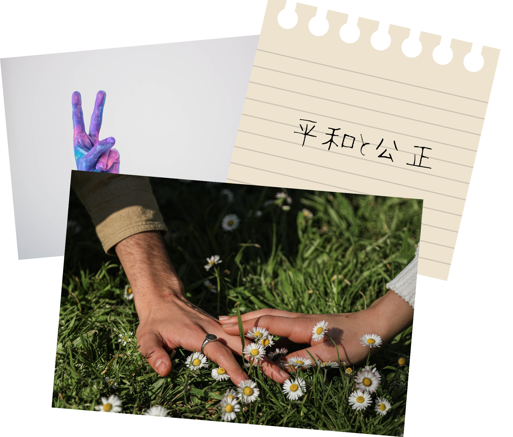
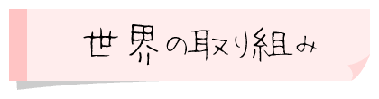

SDGs17の目標に「平和と公正をすべての人に」という目標があります。
現在、5分に1人の子供が暴力で亡くなっているとされています。
また、紛争や不安定な情勢などの国で暮らしている子供は、武力紛争などに巻き込まれています。 この項目では、SDGsの目標15として掲げられている「陸の豊かさも守ろう」で解決するべき問題と現在の状況についてわかりやすく解説していきます。


現在、世界では4人に1人の子供が法律的に存在していないとされています。
その理由として、生まれてからも出産届が出せず、国からその存在を認められていないからです。
この問題から、予防接種が受けられない、学校に入学できない、犯罪に巻き込まれても裁判ができない、人身売買にあっても何も出来ないなどがあります。
また、自分の意志で選べる程の力はなく武装グループなどに所属したり、危険な仕事をさせられている子供も多くいます。
「ネウボラ」
これはフィンランドで取り組まれてる制度のことです。ネウボラとは「アドバイスの場所」を意味するフィンランド語です。ネウボラ保健師という人々が、家族などと定期的に面談し出産や育児の相談などを行っています。この制度は幼児虐待などのリスクを早期発見や予防するなどに役立っています。
「エネルギー事業支援ガイドブック」の配布も行なっていて、企画から事業化までのフローや、サイトの活用の仕方、これまでのモデル事業の実例なども見ることが出来ます。
- 主にアフリカなどで子どもが戦争に巻き込まれたり、暴力で亡くなっている
- 世界では子どもを守るための制度が数多く導入されていたり、平和的な交渉で子どもを犠牲にさせないようにしている
- 世界では4人に1人の子供が法律的に存在していないとされている
紛争や不安定な情勢などの国で暮らしている子供は、 などに巻き込まれてしまう。
※穴埋め箇所をクリックすると正解表示